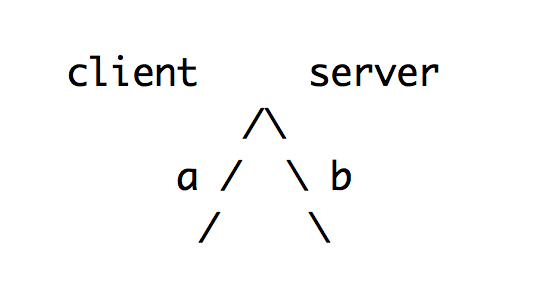
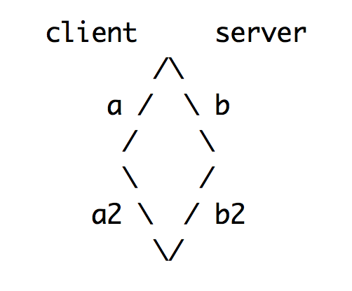
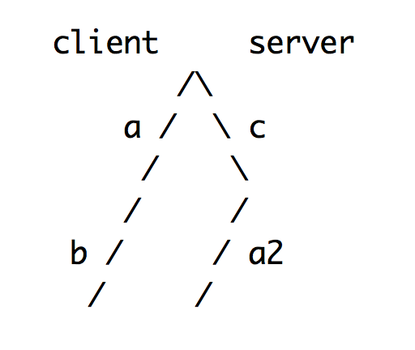
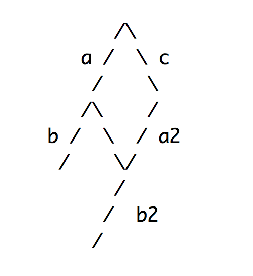
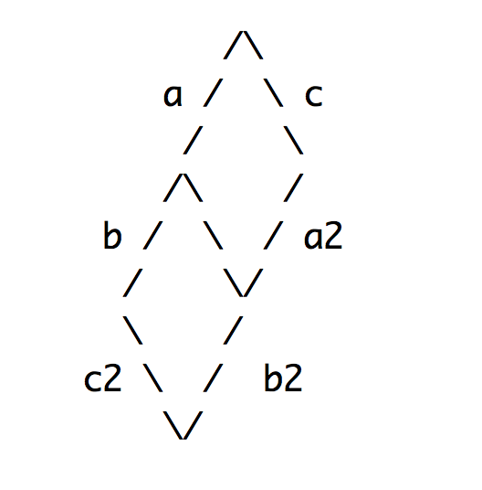

Operational Transform
🎉🎊
Developed at MCTC in Austin, TX 1989 & Xerox Parc in 1995 & Google in mid 2000s
Serialization and broadcast of specific operations performed on a shared document of equal length, with respect to the document cursor
Basic operations
- insertCharacters
- deleteCharacters
- retain
Example
Lets change "I miss brooklyn" to "I miss Brooklyn"
- retain(8)
- deleteCharacters('b')
- insertCharacters('B')
- retain(7)
So.... operations
How do we use them though?
ENTER TRANSFORM
The transform method is the heart of OT — it can apply operations on top of a document without requiring locking and resolving conflicts in a 'sane' fashion
Transform applies changesets to documents of the same length
All the characters in the retain, insert & delete operations must add up to the length of the current document the transform is being applied to
A better example
Two users editing a document that is the characters Kal
- User 1 inserts an e
- User 2 inserts an l
Or, in transforms:
retain(2), insertCharacters('e')
retain(2), insertCharacters('l')
Without OT, you might get Kale and Kael in your respective editors
But with OT we get the following divergent state:

The document has changed in the client and the server, but to two different states.
State A adds e to the document. State B adds l
Now we need to reconcile the two states
Putting both changesets into the transform method returns two new changesets that can be applied to the current document state respectively, but only because they're based on the same HEAD revision
const [a2, b2] = transform(a, b)
Now we can apply a2 to document state A and b2 to B and achieve singularity!

transform returns a modified a2 that now looks like:
retain(3), insertCharacters('e')
Which we can now apply to the document state we have received from the other client, Kal and get Kale
Alas, writers gonna write
In a more complex scenario you'll be dealing with a lot more changesets with the same parent revision that will conflict. Most OT systems resolve this with a first-in-wins strategy.
This means you'll more often be in scenarios like this:

Thankfully the transform method allows us to resolve for this state as well.
In the simple example we discarded state b2 since the client was disinterested in it and only sent a2 to the server. Here, we need to use that to generate a new "bridge" transform.
By transforming b and a2 we can derive b2

And keeping with that, we can also transform b2 and a2 agagainst c to get c2 which we can apply to this document.

That seems kind of laborious
Enter Google Wave! Wave's improvement on this process is the compose function which is quicker to run than transform and composes like changesets. So instead of transforming c against b2 and a2 we can compose the latter into ab2 and just transform(ab2, c)